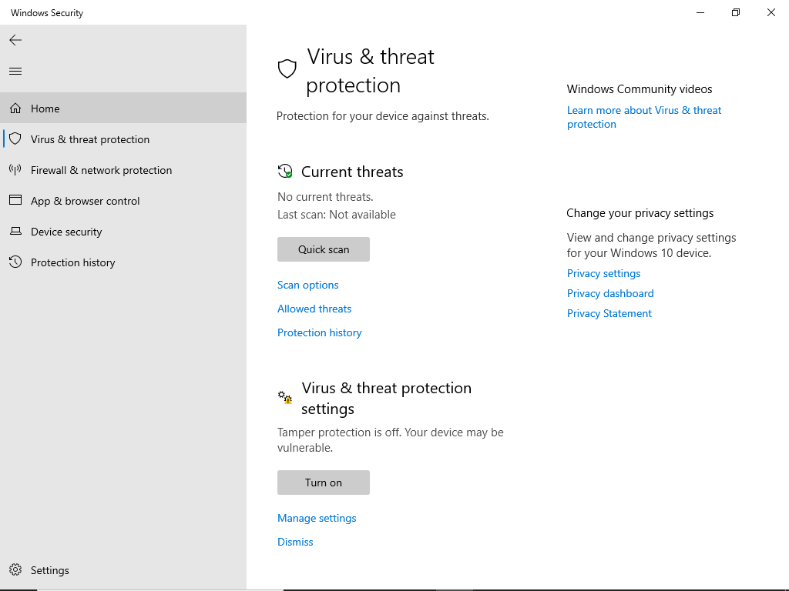
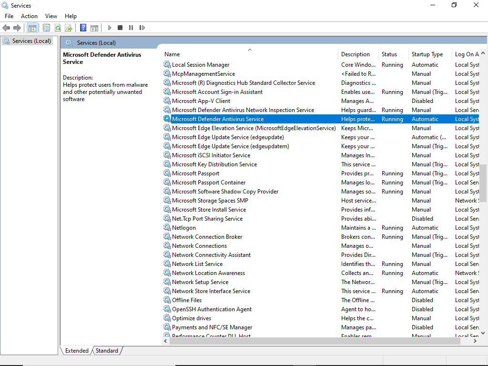
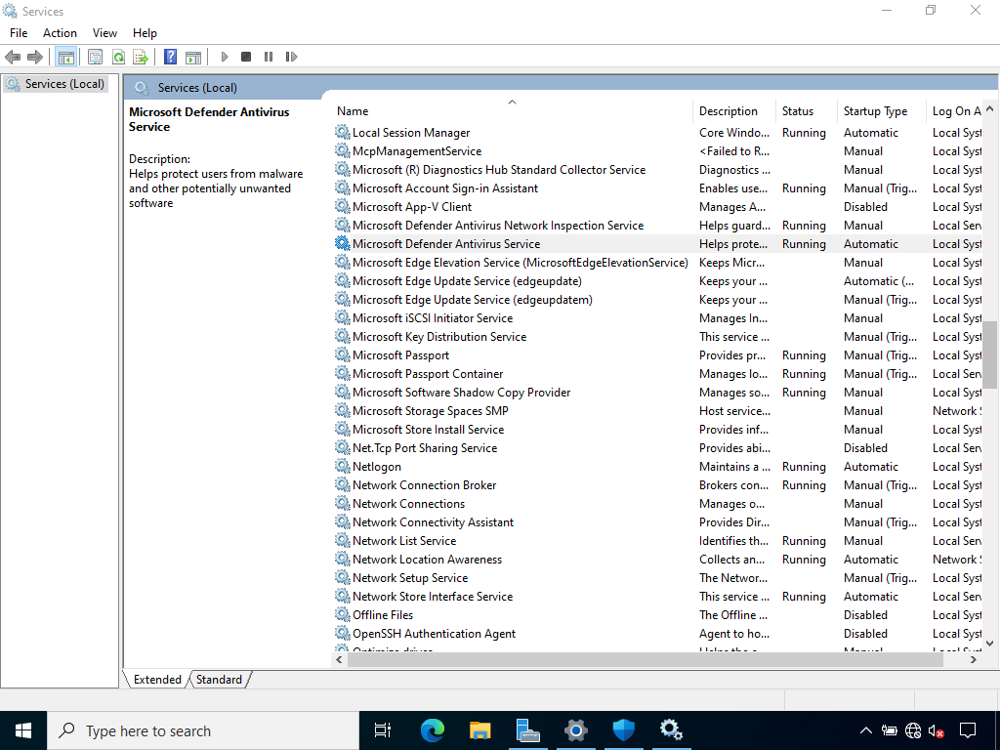
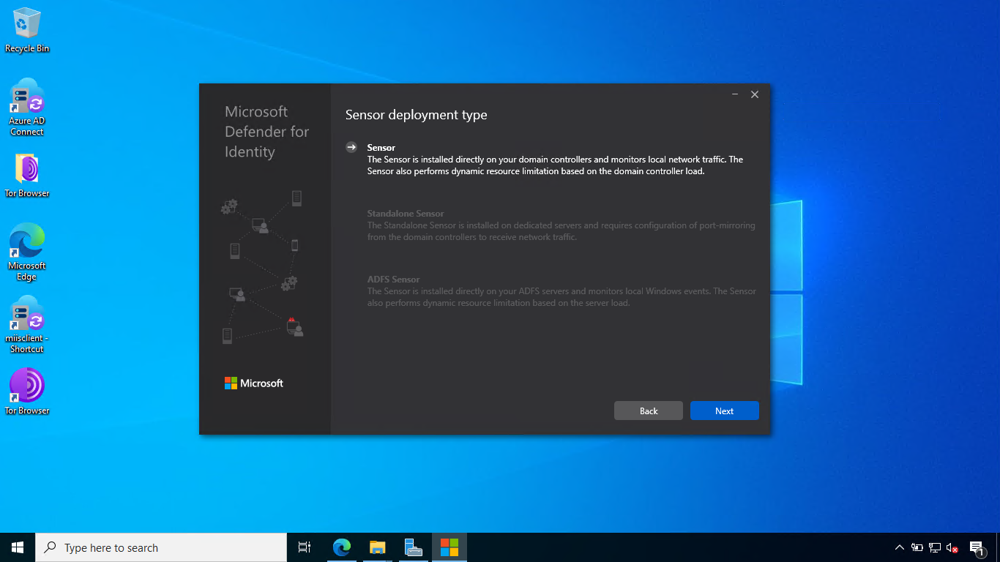

Pilot and deploy Microsoft Defender for Identity
Microsoft Defender for Identity ช่วยตรวจจับและป้องกันภัยคุกคามที่เกี่ยวข้องกับ Active Directory Domain Services (AD DS) เช่น Pass-the-Hash, การโจมตี Kerberos, และการเพิ่มสิทธิ์ผู้ใช้งาน ใช้ AI วิเคราะห์พฤติกรรมการใช้งานของผู้ใช้เพื่อระบุสิ่งผิดปกติ เช่น การพยายามเข้าถึงทรัพยากรที่ไม่ได้รับอนุญาต ลดความเสี่ยงจากการโจมตีที่เน้นเจาะระบบ AD DS เพิ่มความสามารถในการมองเห็นและตรวจสอบกิจกรรมในเครือข่าย ป้องกันข้อมูลสำคัญขององค์กรจากภัยคุกคามที่ซับซ้อน เหมาะกับองค์กรที่ต้องการเสริมความปลอดภัยให้กับระบบที่พึ่งพา AD DS
1. Initialize Defender for Identity instance
ถ้าเรามี license ที่สามารถใช้ Defender for Identity ได้ ก็จะเห็น Identities
ให้เรากดเข้าไป

เมื่อกดครั้งแรก ระบบจะ initialize Defender for Identity instance ให้เรา

รอสักพัก หน้านี้ก็จะปรากฏขึ้นมา

2. Install the Defender for Identity sensor
จากนั้นให้กด Add sensor เพื่อ download มาติดตั้ง

และเริ่มติดตั้ง

Ref. https://learn.microsoft.com/en-us/defender-xdr/pilot-deploy-defender-identity